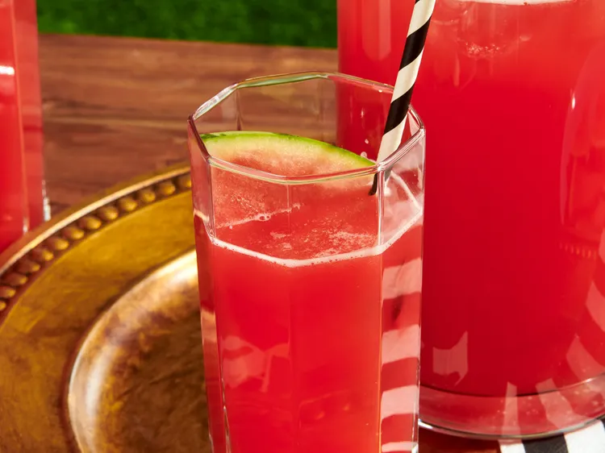

Watermelon Lime Agua Fresca

Description
This recipe makes a very refreshing watermelon drink. You can also use cantaloupe or honeydew melon. It tastes just like the juices served in Mexican restaurants. Serve in tall glasses over ice.
Ingredients
- 8 cups water, divided
- 5 cups peeled, cubed, and seeded watermelon
- 1/2 cup white sugar, or more to taste
- 1/2 cup lime juice, or more to taste
Steps
-
Combine 1 cup water, watermelon, and sugar in a blender; process until smooth.
-
Pour mixture into a large pitcher; stir in lime juice and remaining 7 cups water. Taste; adjust sugar or lime juice. Refrigerate until chilled, about 1 hour.
Home